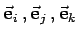
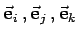

Inhalt Index DeskTop Bronstein

 Geometrie Vektoralgebra und analytische Geometrie Vektoralgebra Definition des Vektors
Geometrie Vektoralgebra und analytische Geometrie Vektoralgebra Definition des Vektors


| (3.260a) |
angegeben werden. Zur Beschreibung der drei Koordinatenachsen in Richtung wachsender Koordinatenwerte werden oft die Einheitsvektoren  oder  verwendet.
oder  verwendet.
In der Abbildung bilden die durch die drei Einheitsvektoren festgelegten Richtungen ein senkrechtes Richtungstripel. Außerdem bilden sie ein orthogonales Koordinatensystem, denn es gilt:
| (3.260b) |
Zudem gilt
| (3.260c) |
so daß man von einem orthonormierten Koordinatensystem spricht.
In diesem Falle heißt der Koordinatenursprung Pol. Der Punkt P ist durch seinen Radiusvektor eindeutig bestimmt.